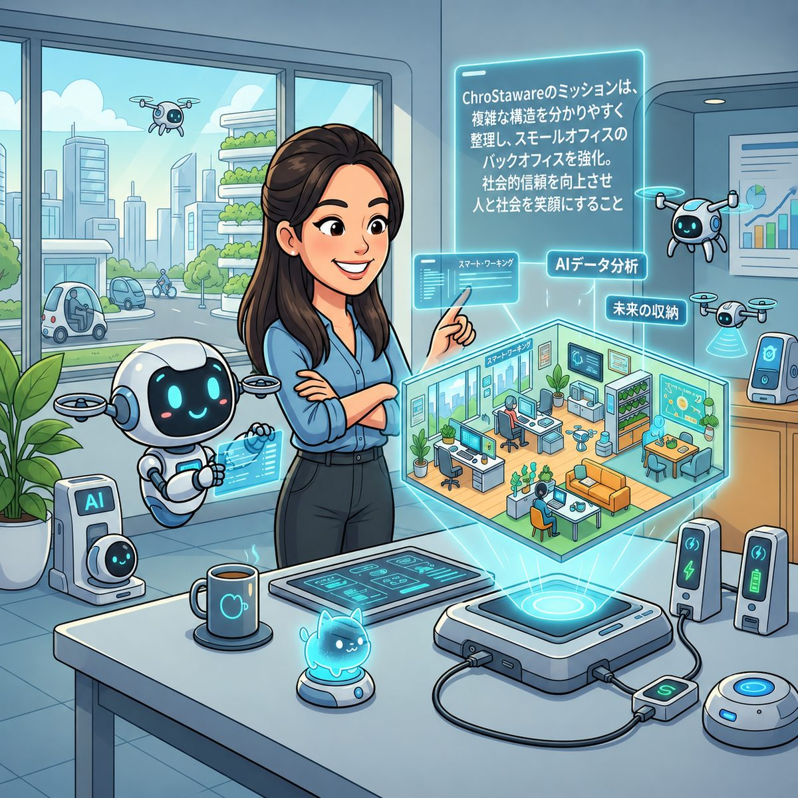

課題
作ったもの
結果
いままで大企業のものだった「内部統制」を、AIがすべての事業者へ。
経営者の考えと方針を、そのままスタイリッシュな"仕組み"に変えていきます。

A NEW ERA
AIが、コストも人手も「できない理由」にできない時代をつくりました。規模に関係なく、経営者の思想を、そのまま美しい仕組みへ。私たちは、そう信じています。
コストも人的リソースも、もう言い訳にならない時代。AIを使えば、小規模事業者でも「経営者の思想を反映した内部統制」を、無理なく・美しく実装できます。
どんぶり勘定や暗黙のルールを、誰の目にも分かる形に可視化します。
「あの人しか分からない」を解消し、人が変わっても回る仕組みに。
経営者の考えと方針を、そのままスタイリッシュな統制へ落とし込みます。
AIで内部統制を形にした成果物です。カテゴリで絞り込めます。各カードをクリックすると、課題・作ったもの・結果の詳細が開きます。